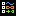

ContextMenu Class
Represents a pop-up menu that enables a control to expose functionality that is specific to the context of the control.
http://msdn.microsoft.com/en-us/library/system.windows.controls.contextmenu.aspx
Methods
From ItemsControl
| Name | Description |
|---|---|
| GetDefaultItemsPanel | Returns a new instance of the default items panel for this ItemsControl |
| GetItemsOwner | Returns the ItemsControl that the specified element hosts items for. If IsItemsHost is set to true on element in a style or if element is a panel created by the ItemsPresenter for an ItemsControl, the ItemsControl is returned; otherwise, a null reference |
| ItemsControlFromItemContainer | Returns the ItemsControl that owns the specified container element. |
From FrameworkElement
| Name | Description |
|---|---|
| BringIntoView | Attempts to bring this element into view, within any scrollable regions it is contained within. |
| BringIntoView | Attempts to bring the provided region size of this element into view, within any scrollable regions it is contained within. |
| Clone | Returns a clone of this element. Used when applying a template |
| FindName | Provides accessors that simplifies access to the NameScope registration methods |
| FindName | Templated version of FindName |
| FindResource | Finds a resource looking in the logical parent chain |
| FindResource | Templated version of FindResource and TryFindResource |
| GetBindingExpression | Returns a binding expression if the target property has an active binding; otherwise, returns null |
| GetParentOrTemplatedParent | Gets the logical parent, but tries to return templated parent when logical parent is null |
| GetStateGroupsRoot | Gets root for VisualState management |
| GetTimeManager | Gets the TimeManager that controls current element |
| IsLoaded | Gets a value that indicates whether this element has been loaded for presentation. |
| SetBinding | Attaches a binding to this element, based on the provided binding object |
| SetBinding | Attaches a binding to this element, based on the provided source property name as a path qualification to the data source |
| SetFocusVisualLayer | Sets the FocusVisualLayer that renders the focus visual |
| SetFrameworkTemplate | Sets a template on this FrameworkElement that can provide values for some of its properties |
| ShowMessageBox | Shows a modal message box over all controls |
From UIElement
| Name | Description |
|---|---|
| AddHandler | Public methods in UIElement Adds a handler to the specified routed event |
| AddNonRouted | Adds a handler to the specified non-routed event |
| Arrange | Positions child elements and determines a size for a UIElement. Parent elements call this method from their ArrangeCore implementation to form a recursive layout update. This method constitutes the second pass of a layout update |
| CaptureMouse | Attempts to force capture of the mouse to this element |
| CaptureTouch | Attempts to force capture of a touch to this element |
| Focus | Attempts to set focus to this element. |
| GetAncestorList | Gets a list of all ancestors from this element to the root |
| GetArrangeConstraint | Gets previous arrange constraint |
| GetKeyboard | Gets keyboard input manager |
| GetMeasureConstraint | Other public methods not in .NET documentation Gets previous measure constraint |
| GetMouse | Gets mouse input manager |
| GetUIParent | Gets a valid UI parent for this element |
| InvalidateArrange | Invalidates the arrange state (layout) for the element. After the invalidation, the element will have its layout updated, which will occur asynchronously unless subsequently forced by UIElement.UpdateLayout(). |
| InvalidateMeasure | Invalidates the measurement state (layout) for the element. |
| InvalidateVisual | Invalidates the rendering of the element, and forces a complete new layout pass. UIElement.OnRender(DrawingContext) is called after the layout cycle is completed. |
| IsArrangeValid | Indicates if arrange is valid |
| IsMeasureValid | Indicates if measured size is valid |
| Measure | Updates the DesiredSize of a UIElement. Parent elements call this method from their own MeasureCore implementations to form a recursive layout update. Calling this method constitutes the first pass of a layout update in the layout system |
| PreRender | Generates render commands for a UIElement |
| PredictFocus | When overridden in a derived class, returns the element that would receive focus for a specified focus traversal direction, without actually moving focus to that element. |
| RaiseEvent | Raises a specific routed event. The RoutedEvent to be raised is identified within the RoutedEventArgs instance that is provided (as the RoutedEvent property of that event data) |
| RaiseNonRouted | Raises a specific non-routed event |
| ReleaseAllTouchCaptures | Releases all captured touch devices from this element |
| ReleaseMouseCapture | Releases the mouse capture, if this element held the capture |
| ReleaseTouchCapture | Attempts to release the specified touch device from this element |
| RemoveHandler | Removes a handler from the specified routed event |
| RemoveNonRouted | Removes a handler from the specified non-routed event |
| UpdateLayout | Ensures that all visual child elements of this element are properly updated for layout |
From Visual
| Name | Description |
|---|---|
| CollectStats | Allows this node to collect rendering stats of its subtree |
| DisableDebugFlags | When enabled draws this node subtree in wireframe mode Disable debug rendering (wireframe, overdraw, etc) for this node and children |
| FindCommonVisualAncestor | Finds the common ancestor of two visuals objects |
| IsAncestorOf | Determines whether the visual object is an ancestor of the descendant visual object |
| IsDescendantOf | Determines whether the visual object is a descendant of the ancestor visual object |
| PointFromScreen | Converts a Point in screen coordinates into a Point that represents the current coordinate system of the Visual |
| PointToScreen | Converts a Point that represents the current coordinate system of the Visual into a Point in screen coordinates |
| TransformToAncestor | Returns a transform that can be used to transform coordinates from the Visual to the specified ancestor of the visual object |
| TransformToDescendant | Returns a transform that can be used to transform coordinates from the Visual to the specified visual object descendant |
| TransformToVisual | Returns a transform that can be used to transform coordinates from the Visual to the specified visual object |
From DependencyObject
| Name | Description |
|---|---|
| ClearAnimation | Clears the animation value of a property |
| ClearAnimation | Clears the animation value of a property |
| ClearLocalValue | Clears the local value of a property The property to be cleared is specified by a DependencyProperty identifier |
| CoerceValue | Coerces and validates the effective property value |
| CoerceValue | Coerces and validates the effective property value |
| EnumCachedProperties | Enumerates the dependency properties that have cached values on this object |
| EnumLocalProperties | Enumerates the dependency properties that have locally set values on this object |
| GetBaseValue | Returns the base value without animation nor coerce (this never returns IExpression like GetLocalValue) |
| GetLocalValue | Returns the local value of a dependency property, if it exists. |
| GetValue | Returns the current effective value of a dependency property on this instance of a DependencyObject |
| GetValueObject | Returns the current effective value of a dependency property on this instance of a DependencyObject as a boxed value |
| GetValueProvider | Gets the provider that returns the effective value for the specified dependency property |
| HasAnimatedProperties | Returns true if there is any animated property |
| InvalidateProperty | Re-evaluates the effective value for the specified dependency property if necessary passed, a full re-evaluation could be needed |
| IsCached | Returns if the value is stored in the cache. If true, the priority is returned in the provider field |
| SetAnimation | Sets the animated value of a property |
| SetCurrentValue | Sets the current value of a dependency property. The current value is set on the coerce field, without modifying source or animated value |
| SetCurrentValueObject | Sets the current value of a dependency property using a boxed value |
| SetExpression | Sets the expression to be evaluated dynamically to obtain the value of the property |
| SetValue | Sets the local value of a dependency property |
| SetValueObject | Sets the local value of a dependency property using a boxed value |
Properties
From ContextMenu
| Name | Description | |
|---|---|---|
|  | HasDropShadow | Gets or sets a value that indicates whether the context menu appears with a dropped shadow |
| HorizontalOffset | Get or sets the horizontal distance between the target origin and the popup alignment point | |
| IsOpen | Gets or sets a value that indicates whether the ContextMenu is visible. | |
| Placement | Gets or sets the Placement property of a ContextMenu | |
| PlacementRectangle | Gets or sets the area relative to which the context menu is positioned when it opens | |
| PlacementTarget | Gets or sets the UIElement relative to which the ContextMenu is positioned when it opens | |
| StaysOpen | Gets or sets a value that indicates whether the ContextMenu should close automatically | |
| VerticalOffset | Get or sets the vertical distance between the target origin and the popup alignment point |
From ItemsControl
| Name | Description | |
|---|---|---|
| DisplayMemberPath | Gets or sets a path to a value on the source object to serve as the visual representation of the object | |
| HasItems | Gets a value that indicates whether the ItemsControl contains items | |
| ItemContainerStyle | Gets or sets the Style that is applied to the container element generated for each item. | |
| ItemTemplate | Gets or sets the DataTemplate used to display each item. | |
| ItemTemplateSelector | Gets or sets the custom logic for choosing a template used to display each item. | |
| Items | Gets the collection used to generate the content of the ItemsControl. When the ItemsSource property is set, the Items collection is made read-only and fixed-size | |
| ItemsPanel | Gets or sets the template that defines the panel that controls the layout of items | |
| ItemsSource | Gets or sets a collection used to generate the content of the ItemsControl. When the ItemsSource property is set, the Items collection is made read-only and fixed-size |
From Control
| Name | Description | |
|---|---|---|
| Background | Gets or sets a brush that describes the background of a control | |
| BorderBrush | Gets or sets a brush that describes the border of a control | |
| BorderThickness | Gets or sets the border thickness of a control | |
| FontFamily | Gets or sets the font family of the control | |
| FontSize | Gets or sets the font size | |
| FontStyle | Gets or sets the font style | |
| FontWeight | Gets or sets the weight or thickness of the specified font | |
| Foreground | Gets or sets a brush that describes the foreground color | |
| HorizontalContentAlignment | Gets or sets the horizontal alignment of a control's content | |
| IsTabStop | Gets or sets a value that indicates whether a control is included in tab navigation. | |
| Padding | Gets or sets the padding inside a control | |
| TabIndex | Gets or sets a value that determines the order in which elements receive focus when the user navigates through controls by using the TAB key. | |
| Template | Gets or sets control template | |
| VerticalContentAlignment | Gets or sets the vertical alignment of a control's content |
From FrameworkElement
| Name | Description | |
|---|---|---|
| ActualHeight | Gets the rendered height of this element. | |
| ActualWidth | Gets the rendered width of this element. | |
| ContextMenu | Gets or sets the context menu element that should appear whenever the context menu is requested through user interface (UI) from within this element. | |
| DataContext | Gets or sets the data context for an element when it participates in data binding | |
| DefaultStyleKey | Gets or sets the key to use to reference the style for this control, when theme styles are used or defined | |
| FocusVisualStyle | Gets or sets a property that enables customization of appearance, effects, or other style characteristics that will apply to this element when it captures keyboard focus. | |
| Height | Gets or sets the suggested height of the element. | |
| HorizontalAlignment | Gets or sets the horizontal alignment characteristics applied to this element when it is composed within a parent element, such as a panel or items control | |
| LayoutTransform | Gets or sets a graphics transformation that should apply to this element when layout is performed | |
| Margin | Gets or sets the outer margin of an element. | |
| MaxHeight | Gets or sets the maximum height constraint of the element. | |
| MaxWidth | Gets or sets the maximum width constraint of the element. | |
| MinHeight | Gets or sets the minimum height constraint of the element. | |
| MinWidth | Gets or sets the minimum width constraint of the element. | |
| Name | Gets or sets the identifying name of the element. The name provides a reference so that code-behind, such as event handler code, can refer to a markup element after it is constructed during processing by a XAML processor. | |
| OverridesDefaultStyle | Gets or sets a value that indicates whether this element incorporates style properties from theme styles. | |
| Parent | Gets the logical parent element of this element | |
| Resources | Gets or sets the locally-defined resource dictionary | |
| Style | Gets or sets the style used by this element when it is rendered | |
| Tag | Gets or sets an arbitrary object value that can be used to store custom information about this element | |
| TemplatedParent | Gets or sets the template parent of this element. This property is not relevant if the element was not created through a template | |
| ToolTip | Gets or sets the tool-tip object that is displayed for this element in the user interface | |
| Triggers | Get the trigger collection | |
| UseLayoutRounding | Gets or sets a value that indicates whether layout rounding should be applied to this element's size and position during layout | |
| VerticalAlignment | Gets or sets the vertical alignment characteristics applied to this element when it is composed within a parent element such as a panel or items control. | |
| Width | Gets or sets the width of the element |
From UIElement
| Name | Description | |
|---|---|---|
| AllowDrop | Gets or sets a value indicating whether this element can be used as the target of a drag-and-drop operation. | |
| Clip | Gets or sets the geometry used to define the outline of the contents of an element | |
| ClipToBounds | Gets or sets a value indicating whether to clip the content of this element (or content coming from the child elements of this element) to fit into the size of the containing element | |
| CommandBindings | Gets a collection of CommandBinding objects associated with this element | |
| DesiredSize | Gets control's desired size (calculated after measure process) | |
| Focusable | Gets or sets a value that indicates whether the element can receive focus. | |
| InputBindings | Gets a collection of InputBinding objects associated with this element | |
| IsEnabled | Gets or sets a value indicating whether this element is enabled in the user interface | |
| IsFocused | Indicates whether this element has the focus | |
| IsHitTestVisible | Gets or sets a value that declares whether this element can possibly be returned as a hit test result from some portion of its rendered content. | |
| IsKeyboardFocusWithin | Gets a value indicating whether keyboard focus is anywhere within the element or its visual tree child elements | |
| IsKeyboardFocused | Gets a value indicating whether this element has keyboard focus | |
| IsManipulationEnabled | Gets or sets a value that indicates whether manipulation events are enabled on this element | |
| IsMouseCaptureWithin | Gets a value that determines whether mouse capture is held by this element or by child elements in its visual tree. | |
| IsMouseCaptured | Gets a value indicating whether the mouse is captured to this element | |
| IsMouseDirectlyOver | Gets a value that indicates whether the position of the mouse pointer corresponds to hit test results, which take element compositing into account. | |
| IsMouseOver | Gets a value indicating whether the mouse pointer is located over this element (including child elements in the visual tree). | |
| IsVisible | Indicates whether this element is visible in the user interface | |
| Opacity | Gets or sets the opacity factor applied to the entire element when it is rendered | |
| OpacityMask | Gets or sets an opacity mask, as a Brush implementation that is applied to any alpha-channel masking for the rendered content of this element | |
| Projection | Gets or sets the perspective projection (3D effect) to apply when rendering this element | |
| RenderSize | Gets calculated (during arrange) render size | |
| RenderTransform | Gets or sets transform information that affects the rendering position of this element | |
| RenderTransformOrigin | Gets or sets the center point of any possible render transform declared by RenderTransform, relative to the bounds of the element. | |
| Visibility | Gets or sets the user interface visibility of this element |
Events
From ContextMenu
| Name | Description | |
|---|---|---|
| Closed | Occurs when a particular instance of a ContextMenu closes. | |
| Opened | Occurs when a particular instance of a context menu opens. |
From Control
| Name | Description | |
|---|---|---|
| MouseDoubleClick | Occurs when a mouse button is clicked two or more times. | |
| PreviewMouseDoubleClick | Occurs when a user clicks the mouse button two or more times. |
From FrameworkElement
| Name | Description | |
|---|---|---|
| ContextMenuClosing | Occurs just before any context menu on the element is closed. | |
| ContextMenuOpening | Occurs when any context menu on the element is opened. | |
| Loaded | Occurs when the element is laid out, rendered, and ready for interaction. | |
| SizeChanged | Occurs when either the ActualHeight or the ActualWidth properties change value on this element. | |
| ToolTipClosing | Occurs just before any tooltip on the element is closed. | |
| ToolTipOpening | Occurs when any tooltip on the element is opened. | |
| Unloaded | Occurs when the element is removed from within an element tree of loaded elements. |
From UIElement
| Name | Description | |
|---|---|---|
| DragEnter | Occurs when the input system reports an underlying drag event with this element as the drag target. | |
| DragLeave | Occurs when the input system reports an underlying drag event with this element as the drag origin. | |
| DragOver | Occurs when the input system reports an underlying drag event with this element as the potential drop target. | |
| Drop | Occurs when the input system reports an underlying drop event with this element as the | |
| FocusableChanged | Occurs when the value of the Focusable property changes. | |
| GiveFeedback | Occurs when the input system reports an underlying drag-and-drop event that involves this element. | |
| GotFocus | Occurs when this element gets logical focus | |
| GotKeyboardFocus | Occurs when the keyboard is focused on this element. | |
| GotMouseCapture | Occurs when this element captures the mouse. | |
| GotTouchCapture | Occurs when a touch is captured to this element | |
| IsEnabledChanged | Occurs when the value of the IsEnabled property on this element changes. | |
| IsHitTestVisibleChanged | Occurs when the value of the IsHitTestVisible dependency property changes on this element. | |
| IsKeyboardFocusWithinChanged | Occurs when the value of the IsKeyboardFocusWithinChanged property changes on this element. | |
| IsKeyboardFocusedChanged | Occurs when the value of the IsKeyboardFocused property changes on this element. | |
| IsMouseCaptureWithinChanged | Occurs when the value of the IsMouseCaptureWithinProperty changes on this element. | |
| IsMouseCapturedChanged | Occurs when the value of the IsMouseCaptured property changes on this element. | |
| IsMouseDirectlyOverChanged | Occurs when the value of the IsMouseDirectlyOver property changes on this element. | |
| IsVisibleChanged | Occurs when the value of the IsVisible property changes on this element. | |
| KeyDown | Occurs when a key is pressed while focus is on this element. | |
| KeyUp | Occurs when a key is released while focus is on this element. | |
| LostFocus | Occurs when this element loses logical focus. | |
| LostKeyboardFocus | Occurs when the keyboard is no longer focused on this element. | |
| LostMouseCapture | Occurs when this element loses mouse capture. | |
| LostTouchCapture | Occurs when this element loses a touch capture | |
| ManipulationCompleted | Occurs when a manipulation and inertia on the UIElement object is complete | |
| ManipulationDelta | Occurs when the input device changes position during a manipulation | |
| ManipulationInertiaStarting | Occurs when the input device loses contact with the UIElement during a manipulation and inertia begins | |
| ManipulationStarted | Occurs when an input device begins a manipulation on the UIElement object | |
| ManipulationStarting | Occurs when the manipulation processor is first created | |
| MouseDown | Occurs when any mouse button is pressed while the pointer is over this element. | |
| MouseEnter | Occurs when the mouse pointer enters the bounds of this element. | |
| MouseLeave | Occurs when the mouse pointer leaves the bounds of this element. | |
| MouseLeftButtonDown | Occurs when the left mouse button is pressed while the mouse pointer is over this element. | |
| MouseLeftButtonUp | Occurs when the left mouse button is released while the mouse pointer is over this element. | |
| MouseMove | Occurs when the mouse pointer moves while over this element. | |
| MouseRightButtonDown | Occurs when the right mouse button is pressed while the mouse pointer is over this element. | |
| MouseRightButtonUp | Occurs when the right mouse button is released while the mouse pointer is over this element. | |
| MouseUp | Occurs when any mouse button is released over this element. | |
| MouseWheel | Occurs when the user rotates the mouse wheel while the mouse pointer is over this element. | |
| PreviewDragEnter | Occurs when the input system reports an underlying drag event with this element as the drag target. | |
| PreviewDragLeave | Occurs when the input system reports an underlying drag event with this element as the drag origin. | |
| PreviewDragOver | Occurs when the input system reports an underlying drag event with this element as the potential drop target. | |
| PreviewDrop | Occurs when the input system reports an underlying drop event with this element as the drop target. | |
| PreviewGiveFeedback | Occurs when a drag-and-drop operation is started. | |
| PreviewGotKeyboardFocus | Occurs when the keyboard is focused on this element. | |
| PreviewKeyDown | Occurs when a key is pressed while focus is on this element. | |
| PreviewKeyUp | Occurs when a key is released while focus is on this element. | |
| PreviewLostKeyboardFocus | Occurs when the keyboard is no longer focused on this element. | |
| PreviewMouseDown | Occurs when any mouse button is pressed while the pointer is over this element. | |
| PreviewMouseLeftButtonDown | Occurs when the left mouse button is pressed while the mouse pointer is over this element. | |
| PreviewMouseLeftButtonUp | Occurs when the left mouse button is released while the mouse pointer is over this element. | |
| PreviewMouseMove | Occurs when the mouse pointer moves while the mouse pointer is over this element. | |
| PreviewMouseRightButtonDown | Occurs when the right mouse button is pressed while the mouse pointer is over this element. | |
| PreviewMouseRightButtonUp | Occurs when the right mouse button is released while the mouse pointer is over this element. | |
| PreviewMouseUp | Occurs when any mouse button is released while the mouse pointer is over this element. | |
| PreviewMouseWheel | Occurs when the user rotates the mouse wheel while the mouse pointer is over this element. | |
| PreviewQueryContinueDrag | Occurs when there is a change in the keyboard or mouse button state during a drag-and-drop operation. | |
| PreviewTextInput | Occurs when this element gets text in a device-independent manner. | |
| PreviewTouchDown | Occurs when a finger touches the screen while the finger is over this element | |
| PreviewTouchMove | Occurs when a finger moves on the screen while the finger is over this element | |
| PreviewTouchUp | Occurs when a finger is raised off of the screen while the finger is over this element | |
| QueryContinueDrag | Occurs when there is a change in the keyboard or mouse button state during a drag-and-drop operation. | |
| QueryCursor | Occurs when the cursor is requested to display. This event is raised on an element each time that the mouse pointer moves to a new location, which means the cursor object might need to be changed based on its new position. | |
| TextInput | Occurs when this element gets text in a device-independent manner. | |
| TouchDown | Occurs when a finger touches the screen while the finger is over this element | |
| TouchEnter | Occurs when a touch moves from outside to inside the bounds of this element | |
| TouchLeave | Occurs when a touch moves from inside to outside the bounds of this element | |
| TouchMove | Occurs when a finger moves on the screen while the finger is over this element | |
| TouchUp | Occurs when a finger is raised off of the screen while the finger is over this element |